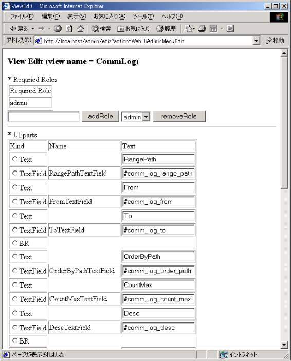

ロゼッタネットサーバ メタWebUI
第0.43版 2016年10月23日
第0.27版 2002年 6月19日
メタWebUI画面に入るためのログイン画面です。
デフォルトでは URL http://localhost/admin/ を開き、
ユーザID: webuiadmin、パスワード: webuiadmin でログインします。
Targetのフレームのメニューの参照と編集ができます。
KindがViewとなっているもにについては、そのメニューを選択すると
ターゲットのサーブレットのinvoke + <Name>のメソッドを呼びます。
このサーブレットが返す画面のデフォルトのHTMLは次のビュー編集で定義されたものになります。
メニューの選択の結果返されるデフォルトのHTMLの構成要素の参照と編集ができます。
HTMLの主なUI部品が使えます。
ほとんどのものが、Nameの値がHTMLにしたときのアトリビュートNameに、
TextがHTMLにしたときのアトリビュートValueになっています。

Choice,Tableについては、HTMLにしたときに、不定個の要素を含みます。
セレクタブル編集の画面では、ChoiceやTableに何をどんな条件で表示するか、
Postしたときにサーバに渡すデータは何か、Parameterの名前を何にするかなどの
参照と編集ができます。
Tableについては、DTDをベースにしたXmlDbAccessor/XmlDbObjectを使っていて、
DTDのタグに対応する項目で、どの項目をどんな順番で表示するかを指定することができます。
これを使って、ログ参照画面に表示する項目や表示する順番を運用時に動的に変える事ができます。